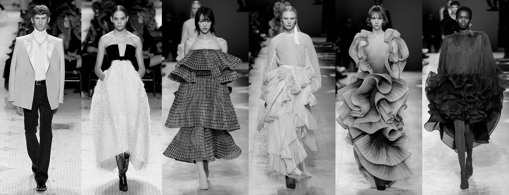

Everything You Need To Know About Haute Couture
Asmita Pawar | December 04, 2021
What does the term haute couture mean to you? Most of you must know that haute couture translated literally, means high dressmaking (couture is French for dressmaking, while haute means high). But that’s not all to it. So, get ready to explore this fashionable term and become a little of a fashion expert.
Haute couture is fashion at its most refined, it is a symbol of French luxury. It refers to custom handmade garments which are exquisite creations imagined by the world’s leading designers and made from high quality, expensive, unusual fabric and sewn with extreme attention to detail, crafted by a team of most-skilled artisans and craftsmen.
Though the term Haute Couture is synonymous with the French culture, it may come as a surprise that it was actually an Englishman named Charles Frederick Worth who in 1858 founded the first true Couture House at number 7, rue de la Paix in Paris.
The Federation de la Haute Couture et de la Mode, the most important fashion organization in France, is responsible for regulating the haute couture industry in Paris. It seeks to promote French fashion culture, where Haute Couture contributes to bolstering Paris in its role as worldwide fashion capital.
One of the most sought-after couture fashion shows, Paris Haute Couture Week is a lavish affair, mostly attended by the porte-monnaie sur pattes, or ‘walking purses’. For many of these buyers it is an investment, a form of art collection.
Every year Haute Couture exhibitions or events are held at some of the most famous and extravagant museums and exquisite locations across the world like the Palais de la Porte Dorée, Palais Galleria and The Musée Yves Saint-Laurent in Paris, The Museum of Decorative Arts in Bordeaux, the Victoria and Albert museum in London and the national museum of Scotland in Edinburg.
For the fashion aficionados from around the world, one can opt for private shopping tours in Paris with your very own personal shopper. Within the heart of the Triangle d’Or (Golden Triangle) in Paris, is where you will find the finest Haute Couture shops in the world.
So, on your next trip to the World’s Fashion Capital, take a stroll along the streets of Avenue Montaigne, Avenue George V, and Rue Francois 1er and immerse yourself in a world of luxury shopping in Paris.
Follow Us


Log In
Username
Password